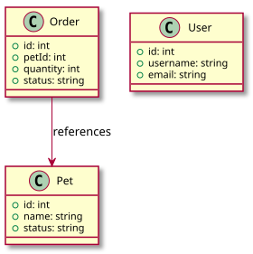

Перейти к содержанию
Swagger Petstore API Docs
UML Class Model
Инициализация поиска
thankfulfor/petstore-api-docs
Главная
Быстрый старт
Справочник API
Interactive API
Бизнес-аналитика
Разработчикам
Пользователям
О проекте
Версии API
Changelog
Swagger Petstore API Docs
thankfulfor/petstore-api-docs
Главная
Быстрый старт
Справочник API
Interactive API
Бизнес-аналитика
Бизнес-аналитика
Обзор
BPMN процесса заказа
Дашборд продаж
Разработчикам
Разработчикам
Обзор
C4 Архитектура
Sequence (создание заказа)
UML Class Model
UML Class Model
Содержание
Основные сущности
Пользователям
Пользователям
Обзор
Онбординг
Устранение неполадок
О проекте
О проекте
Описание
Docs as Code
Версии API
Changelog
Содержание
Основные сущности
UML Class Model

Основные сущности
Pet
Order
User
К началу